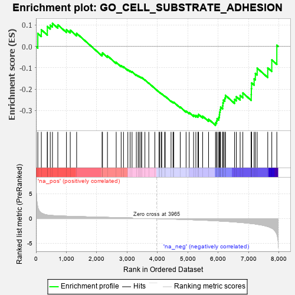
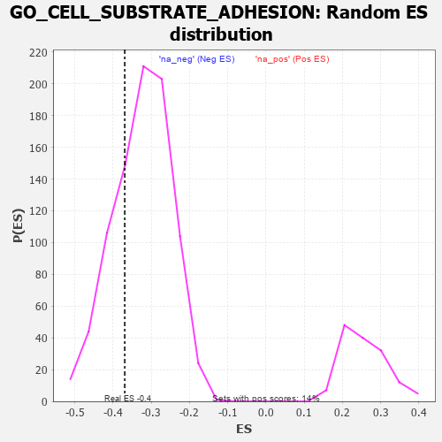

| | | Dataset | 7d |
| Phenotype | NoPhenotypeAvailable |
| Upregulated in class | na_neg |
| GeneSet | GO_CELL_SUBSTRATE_ADHESION |
| Enrichment Score (ES) | -0.36958784 |
| Normalized Enrichment Score (NES) | -1.142381 |
| Nominal p-value | 0.25700936 |
| FDR q-value | 0.7089941 |
| FWER p-Value | 1.0 |
Table: GSEA Results Summary

Fig 1: Enrichment plot: GO_CELL_SUBSTRATE_ADHESION
Profile of the Running ES Score & Positions of GeneSet Members on the Rank Ordered List
| PROBE | GENE SYMBOL | GENE_TITLE | RANK IN GENE LIST | RANK METRIC SCORE | RUNNING ES | CORE ENRICHMENT | | 1 | RAC2 | | | 60 | 2.442 | 0.0607 | No |
| 2 | FOXF1 | | | 176 | 1.136 | 0.0780 | No |
| 3 | NID2 | | | 373 | 0.721 | 0.0733 | No |
| 4 | RADIL | | | 374 | 0.720 | 0.0935 | No |
| 5 | LRP1 | | | 470 | 0.648 | 0.0996 | No |
| 6 | SRF | | | 542 | 0.615 | 0.1078 | No |
| 7 | ID1 | | | 719 | 0.555 | 0.1010 | No |
| 8 | MEN1 | | | 1003 | 0.483 | 0.0787 | No |
| 9 | SRC | | | 1128 | 0.459 | 0.0759 | No |
| 10 | TBCD | | | 1338 | 0.422 | 0.0612 | No |
| 11 | DDR1 | | | 2176 | 0.280 | -0.0369 | No |
| 12 | C1QBP | | | 2189 | 0.278 | -0.0307 | No |
| 13 | BCAS3 | | | 2352 | 0.253 | -0.0441 | No |
| 14 | ATRN | | | 2640 | 0.207 | -0.0746 | No |
| 15 | FER | | | 2803 | 0.183 | -0.0900 | No |
| 16 | DAPK3 | | | 2880 | 0.169 | -0.0949 | No |
| 17 | WNT4 | | | 3023 | 0.146 | -0.1088 | No |
| 18 | RREB1 | | | 3099 | 0.137 | -0.1144 | No |
| 19 | GCNT2 | | | 3162 | 0.128 | -0.1187 | No |
| 20 | SMAD3 | | | 3303 | 0.105 | -0.1335 | No |
| 21 | FMN1 | | | 3363 | 0.095 | -0.1383 | No |
| 22 | TESK2 | | | 3401 | 0.089 | -0.1405 | No |
| 23 | PTPRK | | | 3454 | 0.084 | -0.1447 | No |
| 24 | CDK5 | | | 3480 | 0.080 | -0.1457 | No |
| 25 | RSU1 | | | 3585 | 0.062 | -0.1571 | No |
| 26 | NF1 | | | 3713 | 0.040 | -0.1720 | No |
| 27 | FREM1 | | | 3912 | 0.008 | -0.1969 | No |
| 28 | ACTN1 | | | 4050 | -0.016 | -0.2138 | No |
| 29 | CSF1 | | | 4074 | -0.019 | -0.2161 | No |
| 30 | ABL1 | | | 4125 | -0.027 | -0.2217 | No |
| 31 | CRK | | | 4139 | -0.031 | -0.2225 | No |
| 32 | ARPC2 | | | 4232 | -0.047 | -0.2328 | No |
| 33 | ARL2 | | | 4254 | -0.050 | -0.2341 | No |
| 34 | LAMC1 | | | 4445 | -0.084 | -0.2558 | No |
| 35 | ILK | | | 4510 | -0.096 | -0.2612 | No |
| 36 | RIN2 | | | 4535 | -0.101 | -0.2614 | No |
| 37 | FBLN1 | | | 4748 | -0.149 | -0.2841 | No |
| 38 | FZD4 | | | 4940 | -0.186 | -0.3030 | No |
| 39 | PDPK1 | | | 5043 | -0.207 | -0.3102 | No |
| 40 | PARVA | | | 5187 | -0.245 | -0.3214 | No |
| 41 | PTEN | | | 5262 | -0.261 | -0.3235 | No |
| 42 | NPY2R | | | 5331 | -0.281 | -0.3242 | No |
| 43 | EPHA1 | | | 5349 | -0.285 | -0.3184 | No |
| 44 | ACTN3 | | | 5486 | -0.315 | -0.3268 | No |
| 45 | CD63 | | | 5680 | -0.370 | -0.3409 | No |
| 46 | DOCK1 | | | 5908 | -0.438 | -0.3573 | Yes |
| 47 | LDB1 | | | 5944 | -0.451 | -0.3491 | Yes |
| 48 | ACTN2 | | | 5960 | -0.458 | -0.3382 | Yes |
| 49 | PRKX | | | 6016 | -0.477 | -0.3318 | Yes |
| 50 | RAC1 | | | 6036 | -0.484 | -0.3207 | Yes |
| 51 | VAMP3 | | | 6043 | -0.487 | -0.3078 | Yes |
| 52 | JAG1 | | | 6060 | -0.494 | -0.2960 | Yes |
| 53 | CALR | | | 6077 | -0.499 | -0.2841 | Yes |
| 54 | STK4 | | | 6145 | -0.518 | -0.2781 | Yes |
| 55 | ROCK1 | | | 6152 | -0.520 | -0.2643 | Yes |
| 56 | PARVB | | | 6168 | -0.528 | -0.2515 | Yes |
| 57 | VIT | | | 6215 | -0.541 | -0.2421 | Yes |
| 58 | CDC42 | | | 6236 | -0.548 | -0.2293 | Yes |
| 59 | KANK1 | | | 6536 | -0.678 | -0.2482 | Yes |
| 60 | VWF | | | 6593 | -0.706 | -0.2355 | Yes |
| 61 | GSK3B | | | 6719 | -0.768 | -0.2298 | Yes |
| 62 | ADAM9 | | | 6808 | -0.819 | -0.2181 | Yes |
| 63 | FAT2 | | | 7084 | -0.983 | -0.2254 | Yes |
| 64 | NID1 | | | 7088 | -0.987 | -0.1981 | Yes |
| 65 | RAB1A | | | 7096 | -0.993 | -0.1713 | Yes |
| 66 | PTPRJ | | | 7180 | -1.054 | -0.1523 | Yes |
| 67 | LAMB1 | | | 7220 | -1.094 | -0.1266 | Yes |
| 68 | CIB1 | | | 7280 | -1.152 | -0.1018 | Yes |
| 69 | PKD1 | | | 7628 | -1.611 | -0.1007 | Yes |
| 70 | TRPM7 | | | 7761 | -1.936 | -0.0632 | Yes |
| 71 | VWA2 | | | 7927 | -3.205 | 0.0056 | Yes |
Table: GSEA details [plain text format]

Fig 2: GO_CELL_SUBSTRATE_ADHESION: Random ES distribution
Gene set null distribution of ES for GO_CELL_SUBSTRATE_ADHESION